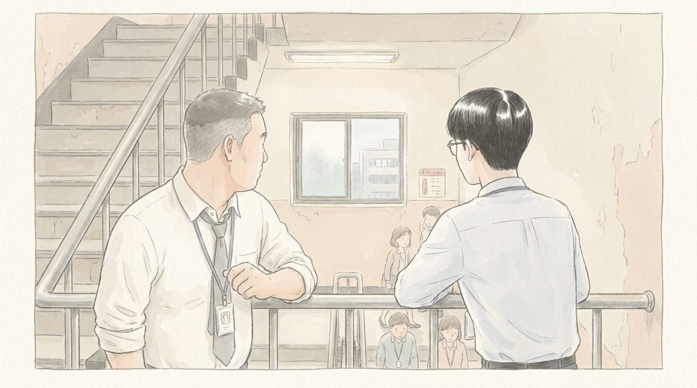
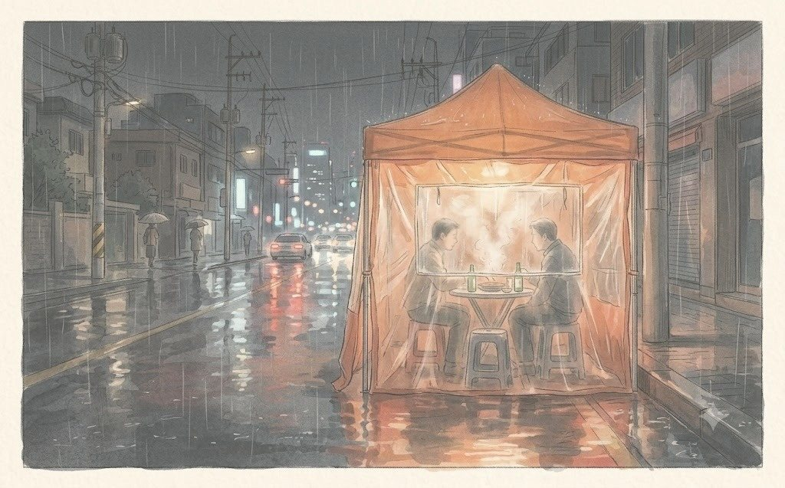
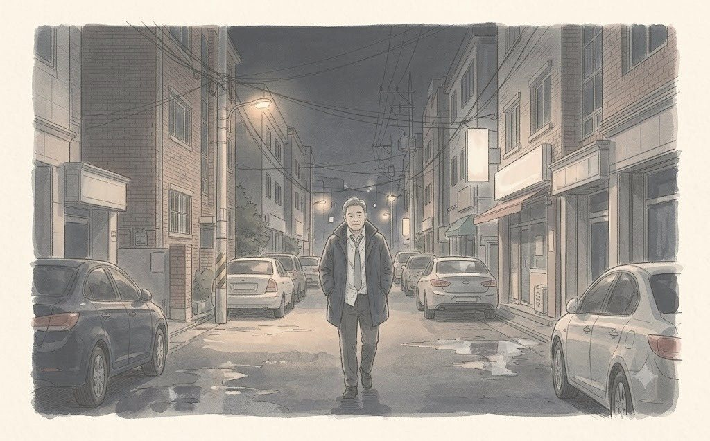

토요일 저녁 7시, 반지는 마침내 서랍을 나왔다.
윤채원은 남색 상자를 오래 내려다봤다. 서촌 비스트로 「여름밤」의 촛불이 반지 위에서 흔들렸다. 이우진은 준비한 말을 절반쯤 했다. 나머지 절반은 기억나지 않았다. 열세 번 고친 문장도 막혔던 사람이, 연습 한 번 안 한 문장을 끝까지 할 리 없었다.
채원은 반지를 꺼내지 않았다. 대신 상자를 천천히 닫았다.
"우진아. 나 하나만 물어볼게."
"응."
"결혼하면, 토요일 아침에 너 집에 있어?"
이우진은 대답하지 못했다. 거짓말을 할 수도 있었다. 하지만 그녀는 마침표 하나로 기분을 읽는 사람이었다.
"...당분간은 아니야."
채원은 웃었다. 슬프지도, 화나지도 않은, 아주 지친 웃음이었다.
"생각해 볼게. 이거 내가 가지고 있어도 돼?"
반지는 서랍을 나왔지만, 아직 손가락에 끼워지지는 않았다.
월요일 아침 9시. 조영석 부장은 이우진의 책상 옆 의자에 아예 걸터앉아 있었다.
"이 과장, 그 바디워시 구독 기획안 말이야. 파일 좀 줘 봐. 우리 사업부 상품이잖아. 내가 한번 보고 의견 줄게."
대용량 바디워시 구독. 온라인기획파트가 2주 동안 만든 기획이었다. 슬로워시 바디워시를 대용량으로 묶어 정기 배송하는 온라인 전용 상품. 이우진이 고객 데이터를 뽑고, 나서현이 소다랩·민트앤의 정기 구독 사례를 조사하고, 한지석이 원가 구조를 다시 짰다. 다음 주 토요일 회의에 올릴 예정이었다.
"부장님, 아직 파트장님 검토 중이라서요."
"아이, 검토는 같이 하면 되지. 우리 상품인데."
조영석은 웃으며 이우진의 어깨를 두드렸다. 그 손이 무거웠다. 쉰두 살. 데일리뷰티사업부 이커머스 담당 부장. 서울 강남의 아파트, 고3 아들 조현우, 그리고 내년이 마지막이라는 임원 승진 기회.
이우진은 한지석에게 메시지를 보냈다. 한지석의 답은 짧았다.
이우진은 파일을 보냈다. 그게 실수였다는 걸 아는 데는 사흘이 걸렸다.
목요일 오후. 대표이사 주재 사업부장 회의.
권재혁은 회의에 들어갔다가 굳은 얼굴로 나왔다. 그는 곧바로 한지석과 백승원을 상무실로 불렀다. 이우진은 문 앞에 섰다.
"데일리뷰티사업부가 오늘 대표 회의에서 신규 사업 하나를 보고했어요."
권재혁이 출력물 한 장을 책상에 내려놓았다.
'데일리뷰티사업부 — 온라인 전용 대용량 구독 상품 추진 계획.'
한지석은 첫 장을 넘기지 않아도 알았다. 표 구조, 그래프 색깔, 문장의 쉼표 위치까지. 그가 2주 동안 다듬은 기획안이었다. 표지만 바뀌어 있었다.
"대표님이 아주 좋아하셨어요. 사업부가 드디어 온라인을 이해하기 시작했다고."
한지석의 얼굴이 하얘졌다. 이우진은 그런 얼굴을 처음 봤다. 차분하던 사람이 화를 낼 때는 먼저 얼굴에서 색이 빠진다는 걸 그날 알았다.
"제가 조 부장님 만나고 오겠습니다."
"지석아."
백승원이 그의 팔을 잡았다.
"놔 주세요, 부장님. 이건 아니잖아요. 우진이랑 서현이가 2주 동안 밤새서 만든 거예요."
"알아. 그래서 네가 가면 안 돼."
"왜요?"
"네가 가면 싸움이 돼. 싸움이 되면 대표님이 보시는 건 기획안이 아니라 온라인팀이랑 사업부가 싸운다는 거야. 그럼 우리가 져. 대표님은 사업부 편이야. 사업부는 내부 사람이고, 우리 상무님은 외부에서 온 사람이니까."
권재혁은 아무 말도 하지 않았다. 그 침묵이 백승원의 말이 맞다는 뜻이었다.
"그럼 어떡해요. 그냥 줘요?"
"아니."
백승원이 넥타이를 느슨하게 풀었다.
"이건 숫자로 싸우는 일이 아니야. 내가 할게."
상무실을 나온 뒤, 이우진과 나서현은 탕비실에서 마주쳤다. 소식은 이미 파트 전체에 퍼져 있었다.
"과장님, 그거 진짜예요? 우리 기획안 표지만 바꿔서?"
"응."
나서현은 종이컵을 구기며 말했다.
"이거 그냥 퇴사각 아니에요?"
이우진은 웃지 못했다. 스물여섯. 회사에 온 지 반년. 그녀의 세대에게 이런 일은 견디는 게 아니라 떠나는 이유였다.
"서현 씨는 이런 일 있으면 바로 그만둘 거야?"
"음... 이번엔 아니요."
"왜?"
"백 부장님이 어떻게 하시는지 보고 싶어서요."
나서현은 구긴 종이컵을 휴지통에 던졌다. 한 번에 들어갔다.
"우리 엄마 아빠 세대는 회사가 시키면 다 참았잖아요. 저는 안 참을 거예요. 근데 안 참는 것도, 뭘 보고 나서 정하고 싶어요."
이우진은 그 말을 오래 기억하게 된다. 참는 세대와 안 참는 세대 사이에서, 그는 어느 쪽인지 아직 몰랐다.
오후 6시. 29층 비상계단.

한지석은 계단 난간에 기대 서 있었다. 백승원이 문을 열고 들어왔다. 둘뿐이었다.
"형."
회사에서 한지석이 백승원을 형이라고 부르는 건 이 계단에서뿐이었다. 10년 전 같은 팀에서 처음 밤을 새운 날부터 그랬다. 사무실 문을 열고 나가면 다시 '부장님'이 되었다.
"형, 이건 진짜 아니잖아요. 애들이 2주를 밤새웠는데."
"알아, 지석아."
"형이 맨날 덮으니까, 사람들이 우리 팀 걸 가져가도 되는 줄 알잖아요."
백승원은 대답하지 않았다. 대신 주머니에서 껌 두 개를 꺼내 하나를 한지석에게 건넸다. 담배를 끊은 지 3년. 둘 다 껌으로 버티고 있었다.
"지석아. 형이 오늘 밤에 조 부장 만날게."
"가서 뭐 하시게요. 또 술 마시고 양보하시게요?"
"응. 양보할 거야. 근데 다 주진 않아."
"뭘 남기는데요?"
"애들 이름."
한지석은 껌을 씹다 멈췄다. 백승원이 그의 어깨를 두 번 두드렸다.
"형 믿어. 너는 애들한테 오늘 밥이나 사 줘. 서현이 지금 퇴사각이라고 했다며."
한지석은 웃음이 터졌다. 화가 난 채로 웃는 건 이상한 기분이었다.
"형은 그걸 어떻게 알아요?"
"형은 다 알아. 그게 형 일이야."
비상계단 문이 열렸다 닫혔다. 백승원은 다시 부장님이 되어 사무실로 걸어갔다.
그날 밤 9시. 회사 뒤 포장마차 「골목끝 포차」.

비닐 천막 안에 테이블 네 개. 둘이 앉기에 딱 좋은 자리였다. 백승원과 조영석. 소주 한 병이 금방 비었다.
"백 부장, 나한테 따지러 온 거 아니지?"
"따지면 뭐가 달라져요?"
조영석은 웃었다. 그리고 두 번째 병을 땄다.
"솔직히 말할게. 미안해. 근데 나 내년이 마지막이야. 너도 알잖아. 쉰셋에 별 못 달면, 그다음은 없어."
"알아요."
"우리 아들 고3이야. 재수하면 또 1년. 대출은 아직 15년 남았고. 집값은 올랐는데, 오른 집값으로는 아무것도 못 해. 팔면 어디로 가?"
조영석은 말을 이어 갔다. 강남 아파트, 학원비, 아내 박선영의 한숨. 쪼개기 회식 날 창가 테이블에서 아무도 묻지 않았던 이야기들이었다. 그때는 자랑처럼 들렸다. 지금은 아니었다.
"나도 우리 사업부에서 뭐 하나는 보여 줘야 했어. 온라인 전용, 구독, 이런 거. 근데 우리 애들은 그런 거 못 만들어. 20년 동안 마트에 물건 밀어 넣는 것만 했어."
두 번째 병이 비었다. 백승원이 세 번째를 시켰다.
"부장님."
"응."
"그 기획, 공동 기획으로 하시죠."
조영석이 잔을 멈췄다.
"데일리뷰티사업부가 상품을 맡고, 온라인팀이 판매 구조를 맡는 걸로. 다음 주 토요일 사장님 회의에 같이 올라가요. 부장님 이름 먼저, 우리 팀 이름 다음에."
"...그래도 돼?"
"대신 하나만요. 발표 자료 마지막 장에 실무자 이름 넣어 주세요. 이우진, 나서현. 둘이 밤새서 만든 거예요."
조영석은 한참 백승원을 쳐다봤다. 그리고 세 번째 병의 첫 잔을 따라 백승원 앞에 놓았다.
"백 부장. 너는 왜 이렇게 사냐."
"어떻게요?"
"맨날 남 이름 먼저 올려 주고. 그래서 너 아직 부장이잖아."
백승원은 웃었다. 대답은 하지 않았다.
밤 11시 반. 세 병이 비었다. 조영석은 대리운전을 불러 먼저 떠났다. 백승원은 포장마차 앞에 혼자 서서 밤공기를 마셨다. 4월인데도 밤바람이 찼다.
휴대폰을 꺼냈다. 부재중 전화 두 통. 아내 정미란이었다.
"여보, 미안해. 늦었지."
"또 누구 대신 술 마셨어?"
"응."
수화기 너머에서 아내가 웃었다. 약사로 20년을 일한 사람의 웃음이었다. 이런 날 남편에게 필요한 게 잔소리가 아니라는 걸 아는 웃음.
"들어와. 꿀물 타 놓을게."
"미안해."
"내일도 미안할 거잖아."
"응. 아마도."
백승원은 전화를 끊고 걸었다. 택시를 잡지 않았다. 집까지는 40분이었다. 그는 그 40분 동안 아무 생각도 하지 않기로 했다. 그리고 한 가지만 생각했다. 오늘 지켜 낸 이름 두 개.

그해 12월, 청연그룹의 신임 임원 명단이 발표되었다.
그 명단에 백승원의 이름은 없었다.
(EP12 끝)